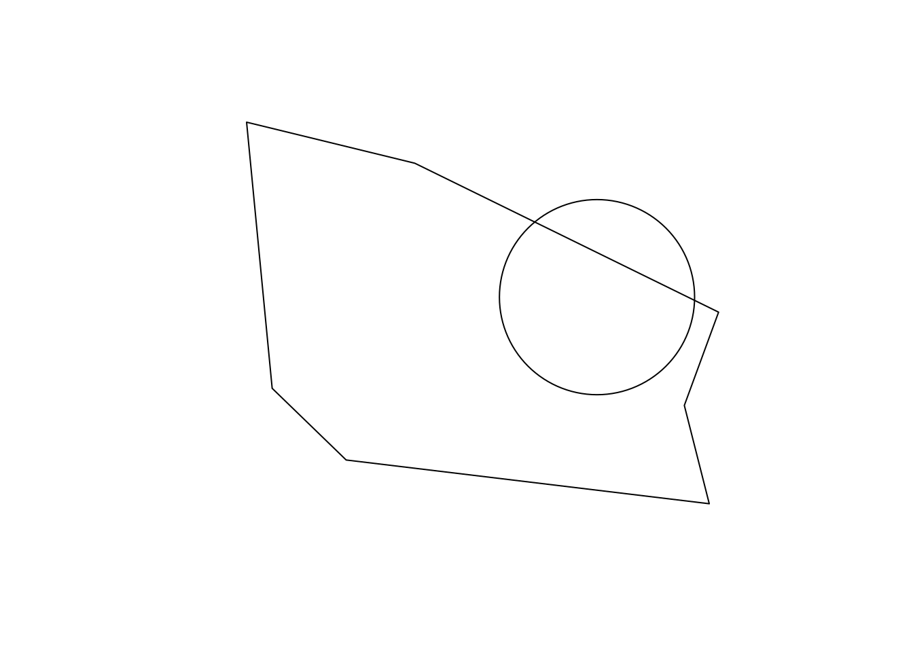
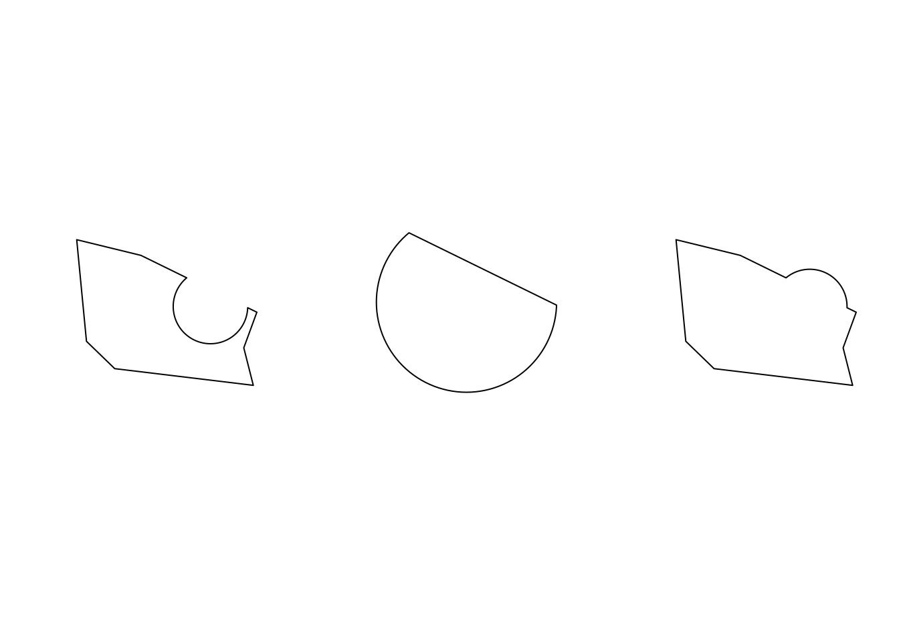
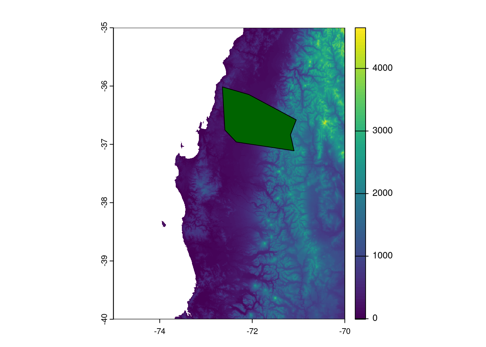
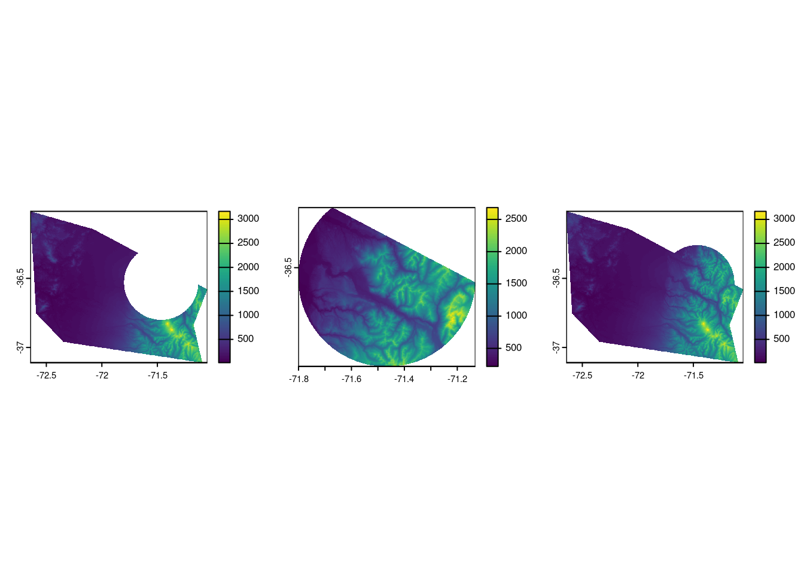
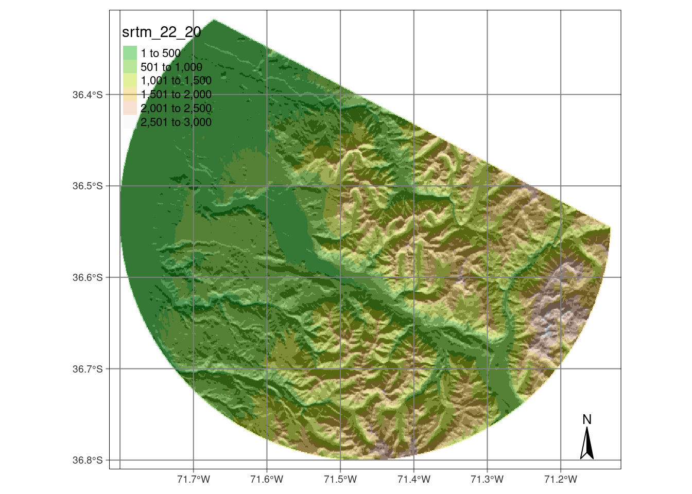
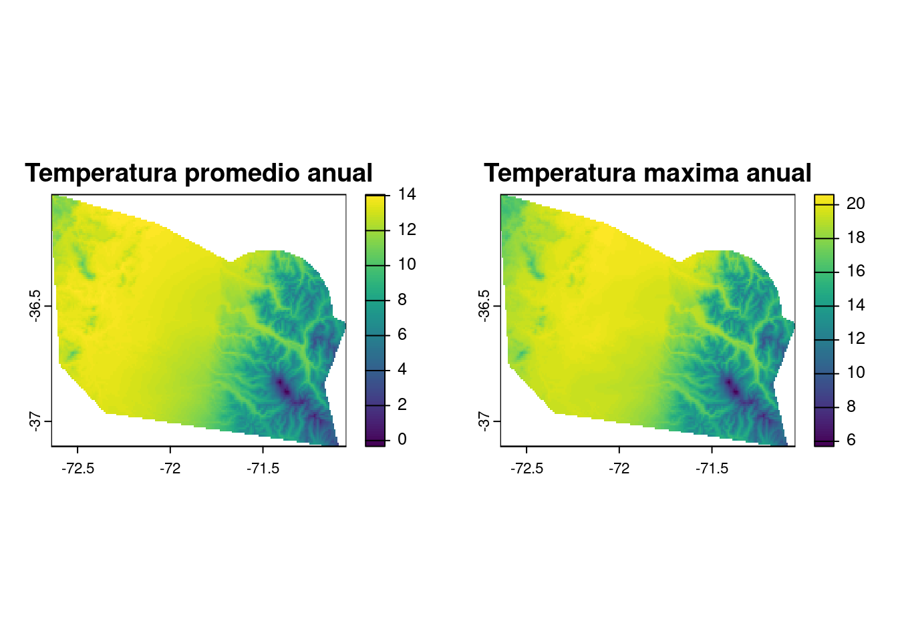
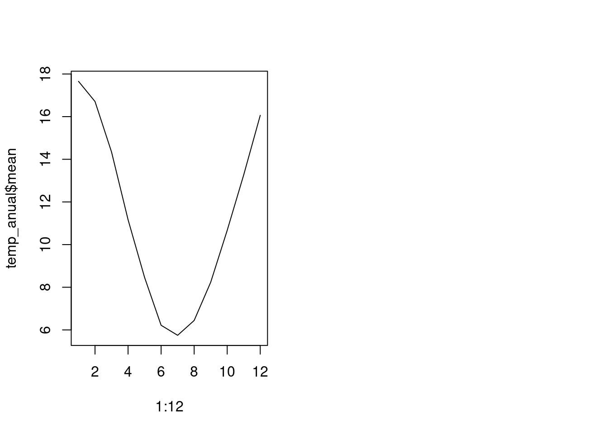

[1,] -72.34546 -36.95977
[2,] -71.09619 -37.10961
[3,] -71.17460 -36.83576
[4,] -71.04972 -36.57955
[5,] -72.07605 -36.14480
[6,] -72.64453 -36.01513
[7,] -72.59119 -36.75405
[8,] -72.34546 -36.95977Evaluación 2: SIG Avanzado (Tipo A)
Escuela de Ingeniería en Medio Ambiente y Sustentabilidad
Cree un script en el que pueda resolver cada una de las preguntas. Copie el enunciado de cada pregunta y déjelo comentado (#).
Pregunta 1
Cree un polígono con las siguientes coordenadas
library(sf)Linking to GEOS 3.11.1, GDAL 3.6.2, PROJ 9.1.1; sf_use_s2() is TRUEm <- matrix(c(-72.34546, -36.95977, -71.09619, -37.10961, -71.17460, -36.83576,-71.04972, -36.57955,-72.07605, -36.14480, -72.64453, -36.01513, -72.59119, -36.75405, -72.34546, -36.95977),byrow = TRUE,ncol = 2)
poligono <- st_polygon(list(m))Pregunta 2
Extraiga el punto centroide de la geometría y cree un buffer de 30.000 metros. Haga un plot del polígono y él buffer en un mismo mapa.
# calcula el centroide y lo guarda en el objeto cent
cent <- st_centroid(poligono)
# transforma el objeto sfg en sfc y le asigna el SRC en coordenadas geográficas datum WGS84
cent_sfc <- st_sfc(cent,crs = 4326)
# transforma el SRC de coordenadas geográficas a UTM
cent_sfc_32719 <- st_transform(cent_sfc,32719)
#clacula el buffer de 30km
buf_30km <- st_buffer(cent_sfc_32719,dist = 30000)Pregunta 3
Aplique una operación afin sobre el buffer, para trasladar el buffer 40.000 metros hacia el Este y 10.000 metros hacia el Norte. Haga un plot del polígono y el buffer trasladado.
poligono_sfc <- st_sfc(poligono,crs = 4326)
poligono_32719 <- st_transform(poligono_sfc,32719)
buf_30km_tras <- buf_30km + c(40000,10000)
plot(poligono_32719)
plot(buf_30km_tras,add = TRUE)
Pregunta 4
Aplique las operaciones de corte de forma que:
+ al polígono se le pueda extraer la superficie que corresponde al buffer.
+ se obtenga la geometría del área común entre el polígono y el buffer
+ se junten en una geometría el polígono con el bufferNota: Para cada una de las operaciones anteriores, haga un plot.
st_crs(buf_30km_tras) <- 32719
par(mfrow = c(1,3))
dif <- st_difference(poligono_32719,buf_30km_tras)
int <- st_intersection(poligono_32719,buf_30km_tras)
uni <- st_union(poligono_32719,buf_30km_tras)
plot(dif)
plot(int)
plot(uni)
Pregunta 5
Descargue un raster de elevación con resolución de ~100 metros para el polígono de P1. Utilice la librería {geodata} y la función “elevation_3s”. Haga un plot de la elevación y del polígono.
# install.packages('geodata')
library(geodata)Loading required package: terraterra 1.7.83dem <- elevation_3s(lon = cent[1],lat=cent[2],path = tempdir())
plot(dem)
plot(poligono,add = TRUE,col='darkgreen')
Pregunta 6
Aplique un corte y/o máscara, para cortar el raster de elevación de la pregunta anterior, de forma que sólo se puedan visualizar los valores de elevación de los píxeles que se encuentran dentro de la geometría. Utilice las tres geometrías creadas en P4.
library(terra)
# transformar geometrias a crs=43265
dif_4326 <- st_transform(dif,4326)
int_4326 <- st_transform(int,4326)
uni_4326 <- st_transform(uni,4326)
dem_dif <- crop(dem,dif_4326)
dem_dif <- mask(dem_dif,vect(dif_4326))
dem_int <- crop(dem,int_4326)
dem_int <- mask(dem_int,vect(int_4326))
dem_uni <- crop(dem,uni_4326)
dem_uni <- mask(dem_uni,vect(uni_4326))
par(mfrow = c(1,3))
plot(dem_dif)
plot(dem_int)
plot(dem_uni)
Pregunta 7
Cree un mapa de sombras (hillshade) con el raster de elevación de la pregunta anterior. Elija una de las tres geometrías creadas en P4.
asp <- terrain(dem_int,v = 'aspect',unit = 'radians')
slp <- terrain(dem_int,v = 'slope',unit = 'radians')
hill <- shade(slp,asp)Pregunta 8
Cree un mapa utilizando la libreria {tmap} de forma que se pueda visualizar la elevación del raster con transparencia de forma que se pueda apreciar la textura. El mapa debe tener una grilla en coordenadas geográficas y una flecha norte. Guarde el mapa en formato estatico y como interactivo.
library(tmap)Breaking News: tmap 3.x is retiring. Please test v4, e.g. with
remotes::install_github('r-tmap/tmap')mapa <- tm_shape(hill) +
tm_raster(palette = 'Greys',legend.show = FALSE) +
tm_shape(dem_int) +
tm_raster(palette = terrain.colors(30),alpha = .4) +
tm_graticules() +
tm_compass()
mapa
tmap_save(mapa,'mapa_estatico.png')Map saved to /media/francisco/nube/OneDrive/R-projects/Clases/SIG2-UMayor/Evaluaciones/Eva2_2024/mapa_estatico.pngResolution: 2216.472 by 1989.649 pixelsSize: 7.388239 by 6.632162 inches (300 dpi)tmap_save(mapa,'mapa_interactivo.html')Compass not supported in view mode.Interactive map saved to /media/francisco/nube/OneDrive/R-projects/Clases/SIG2-UMayor/Evaluaciones/Eva2_2024/mapa_interactivo.htmlPregunta 9
Cargue el raster multicapa con los datos de temperatura mensual promedio (1990-2020) para Chile. Los debe descargar desde acá. Utilice la tercera geometría de la pregunta 4 (4c) para aplicar las operaciones raster locales y globales, según corresponda:
- calcular el promedio de temperatura anual para cada pixel de la geometria (4c)
- calcular el máximo de la temperatura anual para cada pixel de la geometria (4c)
- calcular el promedio de temperatura anual en la geometria (4c) para cada uno de los meses.
temp <- rast('temp_chile.tif')
temp_corte <- crop(temp,uni_4326)
temp_mascara <- mask(temp_corte,vect(uni_4326))
# calcular el promedio de temperatura anual para cada pixel de la geometria (4c)
temp_promedio <- mean(temp_mascara,na.rm = TRUE)
# calcular el máximo de la temperatura anual para cada pixel de la geometria (4c)
temp_maxima <- max(temp_mascara,na.rm = TRUE)
par(mfrow = c(1,2))
plot(temp_promedio,main = 'Temperatura promedio anual')
plot(temp_maxima,main = 'Temperatura maxima anual')
# calcular el promedio de temperatura anual en la geometria (4c) para cada uno de los meses.
temp_anual <- global(temp_mascara,'mean',na.rm = TRUE)
temp_anual mean
CHL_wc2.1_30s_tavg_1 17.655659
CHL_wc2.1_30s_tavg_2 16.709615
CHL_wc2.1_30s_tavg_3 14.342069
CHL_wc2.1_30s_tavg_4 11.167827
CHL_wc2.1_30s_tavg_5 8.459721
CHL_wc2.1_30s_tavg_6 6.216402
CHL_wc2.1_30s_tavg_7 5.746182
CHL_wc2.1_30s_tavg_8 6.441650
CHL_wc2.1_30s_tavg_9 8.232350
CHL_wc2.1_30s_tavg_10 10.668057
CHL_wc2.1_30s_tavg_11 13.271763
CHL_wc2.1_30s_tavg_12 16.060932plot(1:12,temp_anual$mean,type ='l')